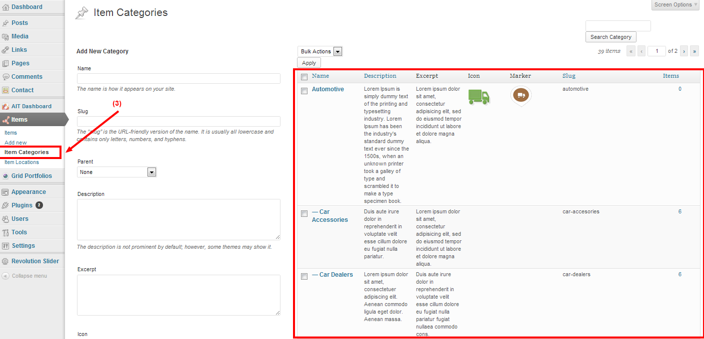
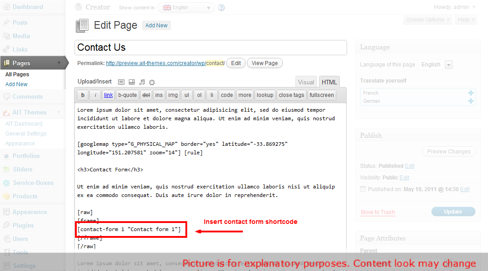

Online Documentation - The up to date documentation
Table of contents:
- 1. Hosting Requirements
- 2. Theme Installation Instructions
- 3. How To Add and Manage Items
- 4. How to set up paypal account and manage users
- 5. How To Use Search on Homepage
- 6. How To Add Advertisements
- 7. Advanced Search Options
- 8. Creating Custom Menus
- 9. How to Use Revolution Slider
- 10. Header / Slider Options
- 11. Setting Up Portfolio
- 12. Setting Up Contact Form
- 13. How to edit Custom Type
- 14. Advanced users: Editing HTML files
1. Hosting Requirements
We always test our theme on most standard hosting set ups, however make sure your hosting match the following requirements:
- PHP5 version
- PHP5 GD library installed
- Notices & Warnings are turned off
- We also recommend mod_rewrite enabled
- Memory limit set up at least 64MB
- upload_max_filesize at least 10MB
- Please also check that you have permissions to write to theme folder
2. Theme Installation Instructions
Installation Screencast
Whole installation process in covered in the following video tutorial.
Theme Installation
Theme should be installed standard way via wordpress admin panel.
- Please navigate to "Appearance -> Themes -> Install Themes"
- Click on Upload
- Select your theme from WP folder that is included in the Zip file you purchased.
- Click Install Now
- After the theme is successfully installed, click Activate
[notification type="attention"]To import correctly media for default content, uncheck please in Settings > Media option: Organize my uploads into month- and year-based folders. Media for default content should be directly in Uploads folder.[/notification]
Importing Default Content
For faster site development we recommend you to import default content. Default content shows you all page layouts, shortcodes and other post types. If youd like to import it, you can do it via Tools -> Import -> WordPress -> Upload file and import. Please select a file called defaultcontent-export.xml and and simply click Upload file and import. We recommend you installing Contact Form 7? plugin before running import. Itll import you also contact form examples.
NOTE: for importing content use this plugin WordPress Importer.
{kind=link}
Setting Up Homepage and Blog
Please note that you have to select a homepage and posts page for our theme to work properly.
1. If you havent uploaded our default content, please create a new page. You can of also edit the existing homepage we provided in default content.
2. Select Homepage Template" layout for the page that should become your homepage. Please note if there is no "Template" option available or dropdown does not include Homepage template, you don't need to set it up.
{kind=link}
3. Navigate to: Admin -> Settings -> Reading and set a static Front page & Posts page:
{kind=link}
3. How To Add and Manage Items
All items which you would like to add into the map you need to set up in admin in section "Items" (1).
{kind=link}
At first you need to set up some "Item Locations" (2) and "Item Categories" (3)
{kind=link}
In the "Item Categories" you can upload / set up "Icons" and "Markers" as well!!!
{kind=link}
Then click on "add new" and fill the description of Item.
(4) Name of new item,
(5) Description of item,
(6) Choose item category,
(7) Choose item location,
(8) Add featured image,
(9) Add address,
(10) Add position of item by clicking on the map,
(11) Add exact GPS position of item,
(12) Show "Street View" instead of position on the map,
(13) Add Opening hours.
{kind=link}
(12) You can set up exact street view in admin which you would like to get showed on the page. After you select show street view you will get "street view" map / picture in slider place.
{kind=link}
The same position you set in admin will be on the page of the item.
{kind=link}
4. How to set up paypal account and manage users
Directory Wordpress Theme includes "registration form" for users / visitors which can be connected to paypal. Your users / visitors can register to your portal and add their own items (company, organisation, profile etc.)
PAYPAL Account
First step before setting up paypal account in admin section "settings" is selecting that "anyone can register" and "new user default role" is Subscriber.
{kind=link}
You can connect Your Paypal account with Directory WP Theme in Admin. In "AIT Dashboard" go to "General Settings" and choose Accounts from the menu.
In Section Paypal System you need to set up all the information about your paypal account as (API enviroment, API username, currency etc.)
*Check this tutorial "how to get paypal API info".
{kind=link}
*Don't forget to select enable paypal system to buy packages (accounts) !!! If you don't select enable, visitors will register and add items for free!!!
In section PayPal API Enviroment you can choose two options:
- Virtual Enviroment for testing - for more info check developer.paypal.com
- Live (Real) Enviroment
Below you can set up different types of accounts with variety of number of items and prices, expiration date and account capabilities.
{kind=link}
Managing Users
In section "Users" you can check and manage all your registered users. They have determine roles according the type of account they paid for. *You (as Admin) can manually add people into the list of users as well and give them any role.
{kind=link}
Registration of Users
The visitors can register to your portal through the registration form on any page where you add shortcode or widget with registration form. After adding the username, email and clicking on "buy" they are automatically linked to the paypal where they can pay for the service.
After registration they recieve into the email box: username, password and log in link to your portal. They can log in but they are not allow to submitt the items untill they pay for the account.
Registration Form Widget:
In Appearance / Widgets just drag and drop "Theme - Directory Login" widget into the sidebar.
{kind=link}
Registration Form Shortcode:
[directory_register]
{kind=link}
Adding Items
After login and payment users can get to the section items and add own ones. The process of adding is the same like in the role of admin except creating new categories. Follow documentation how to add / manage your items.
{kind=link}
*All items added by users have to be confirmed by Admin!
Update of users account
If users want to upgrade account they can do it in section "directory account". They can upgrade account there if they haven't paid yet. In case of updating for better account you pay only difference of the price.
Users can check number of days before expriration as well!
{kind=link}
5. How To Use Search on Homepage
Directory Wordpress Theme allows you to search items on the map according three different filters and theirs combinations as well.
You can search according Keyword (1), Localion (2) or Category (3). When you'll choose your criteria click on search (4).
{kind=link}
You'll get only items on the map and list which requires your criteria. As an example I used location "Brooklyn" and category "Automotive".
{kind=link}
6. How To Add Advertisements
Directory WP Theme includes 4 advertising spaces. You can set up banners in generals setting (1) then choose Advertising (2).
You can use 4 different ads places:
- Ads box above the topbat (3)
- Ads box above the content (4)
- Ads box above the comments (5)
- Ads box below the comments (6)
{kind=link}
Check picture below where the Ads are located.
{kind=link}
7. Advanced Search Options
{kind=link}
You can set up advanced search options in admin. In "general settings" choose "search" from the top menu.
In the field "Advanced Search" you can set up all the settings, values etc.
{kind=link}
8. Creating Custom Menus
1. Navigate to: Appearance Menus
2. Now you can choose any items like pages, categories or custom links from the left column them to add to Main menu or Footer menu.
After you have added in your items, you can use drag and drop to order individual items. You can also click each item to reveal additional configuration options.
When you have finished building your custom menu, make sure you click the Save Menu button.
3. Its also important to define which menu will become your Primary menu and which one will be a Footer menu. This can be set in Theme Locations box on the left hand side.

9. How to Use Revolution Slider
Revolution Slider comes with these features:
- Unlimited Slides
- Unlimited Caption Layers
- CSS Animation with a fallBack to jQuery
- Vimeo & YouTube video
- Drag and Drop layering
First step is to go to Revolution Slider Plugin and click on create new Slider.
{kind=link}
There you can set and edit basic settings about slider like slide transitions, slide change speed, shadowing, responsivity, slide navigation etc.
Required are Slider Name and Slider Alias:
{kind=link}
Then click on Create Slider and add sliders backgrounds from your gallery :)
After that go to edit slides where you can set up everything what you would like to add to your slides.
On the top (6) you have some basic settings (transition, slot amount, rotation, delay etc.). In section Slide Image and Layers (7) you can add (delete) new layers (text, image, video) (8) and they starting to sort continually with adding in section Layers Sorting (9). Just drag and reorder (10) them how you wish :)
All layers you can simply drag (11) and drop exactly where you want them on slide picture.
In layer params (12) you can set / edit text, video, pics, animations, position and css file ( (13) as well.
{kind=link}
For more information follow original documentation of Revolution Slider.
10. Header / Slider Options
Directory WP Theme contains 4 different types of header (slider):
- Revolution Slider
- Google Map (with items)
- Single Image
- Nothing
{kind=link}
11. Setting Up Portfolio
Theme provides powerful custom built Portfolio. You can use it to display various item types like images, videos or websites. You can simply add in new items to portfolio by click on Portfolios -> Add new Item from WP-Admin and then manage all items exactly like standard wordpress posts or pages.
{kind=link}
{kind=link}
Portfolio items can stored into unlimited number of Portfolio Categories. You can then select which portfolio youd like to include on a specific page or post. To manage portfolio categories please navigate to Portfolio -> Portfolio Categories from WP-Admin.
{kind=link}
When you have created your portfolio items and assigned them to the categories, you can simply use shortcode to show your portfolio on any page or post. Portfolio shortcodes icon is available in your visual editor.
You can find also some examples of portfolio shortcodes in our preview sites of themes.
12. Setting Up Contact Form
For contact form we use a free wodpress plugin called Contact Form 7. More info about this plugin can be found on the following url: http://contactform7.com/
To install this plugin go to Plugins > Add new and type into search bar Contact Form 7. Find the plugin and click to Install Now.

Then click Activate Plugin. A new menu section will be created at the left hand side. Itll be calledContact.
{kind=link}
{kind=link}
If you want to have the same contact form like we have at our demo site, you can also install Really Simple CAPTCHA plugin. Code that we use on our demo site is as follows. Please insert it into Form box in Contact settings page:
<p>
<label for="your-name">Name <span>*</span></label>[text* your-name]
</p><p>
<label for="your-email">Email <span>*</span></label>[email* your-email]
</p><p>
<label for="your-subject">Subject</label>[text your-subject]
</p><p>
<label for="your-message">Message</label>[textarea your-message]
</p><p class="selectbox">
<label for="slect-os">Your OS</label>[select slect-os " " "Windows XP" "Windows 7" "Apple" "Linux"]
</p><p class="checkbox">
[checkbox* agreement use_label_element exclusive "I agree with the terms of use of this Contact Form"]
</p><p class="radiobuts-horizontal">
<span class="label">Do you need Support ?</span>[radio radiobuts use_label_element "Yes" "No" "Nobody Knows"]
</p><p class="radiobuts-vertical">
<span class="label">Do you need Support ?</span>[radio radio-vertical use_label_element "Yes Vertical" "No Vertical" "Nobody Knows Vertical"]
</p><p class="captcha">
[captchac captcha-1] [captchar captcha-1]
</p><p>[submit "Send Message"]</p>
Once you have your contact form created, you can insert into to any of you pages with a simplecontact-form shortcode:


{kind=link}
{kind=link}
13. How to edit Custom Type
(example for WP Directory Item type)
Following tutorial shows how to add few simple fields into your Item custom type in Directory theme (basically steps to edit other custom types in other themes are very similar...).
Adding additional information for some custom type require:
1. Modify backend where you can store information for custom type.
2. Modify frontend codes to show these new information on your site.
1. Modify backend - settings of custom type
In our themes structure of settings in admin area is saved in files with extension *.neon
Neon files you can find in theme folder ./wp-content/themes/themeName/config - there are files with settings structures as AIT General Settings and AIT Appearance (these settings are in file theme-config.neon)
Neon files for custom types are in folders of each custom type: ./wp-content/themes/themeName/AIT/Framework/CustomTypes/folderOfCustomType
For example for custom type Item in Directory theme, is structure of settings in file ./wp-content/themes/directory/AIT/Framework/CustomTypes/dir-item/grid-portfolio.neon
Following image shows how the structure looks. For example Opening Hours in Item custom type:
{kind=link}
Let's try add some additional information for this Item custom type, for example some information about contact person for this Item.
We'll create new section with name Contact Person, and for each Item we will be able store information:
1. contact person name
2. contact person phone
3. some additional information for this contact person.
Following structure of Opening Hours section, we can create something like that:
"Contact Person" : section
contactPersonName:
label: Name
type: text
contactPersonPhone:
label: Phone
type: text
contactPersonInfo:
label: Additional Info
type: textarea
Following image shows what is the result of these few lines:
{kind=link}
Now we can store for each Item custom type new information.
We'll need now edit frontend code to show new information on site.
2. Modify frontend - show information on site
Template files with main html codes for site are in folder "Templates" (./wp-content/themes/themeName/Templates).
In this example we want show new information on the single page of Item custom type - for this page is used file ./wp-content/themes/directory/Templates/single-ait-dir-item.php
Following image shows which code represent section with Opening Hours.
{kind=link}
We are using Nette framework in our themes, more information about Nette Framework here: http://doc.nette.org/en/
Opening Hours are inside "if" condition to do not show items which are not filled for current Item custom type.
Similar we can show new section with Contact Person information for example below Opening Hours:
{kind=link}
And this is result of changes above:
{kind=link}
14. Advanced users: Editing HTML files
If you are an advanced user and would like to edit HTML directly, please be advised that we use a MVC architecture that allowed us to completely separate HTML content from standard WordPress PHP files.
- HTML templates can be found in folder ./Templates
- CSS is in file style.less.css, please note that style.css is generate dynamically and all your changes will be therefore deleted
You can read more about our templating engine WpLatte on the following url.